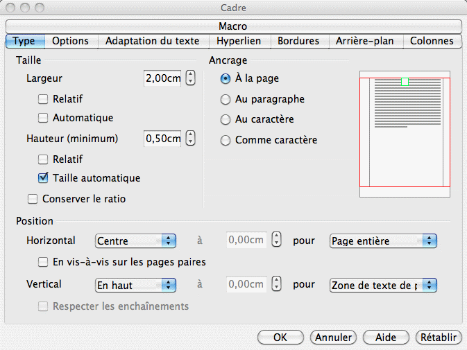
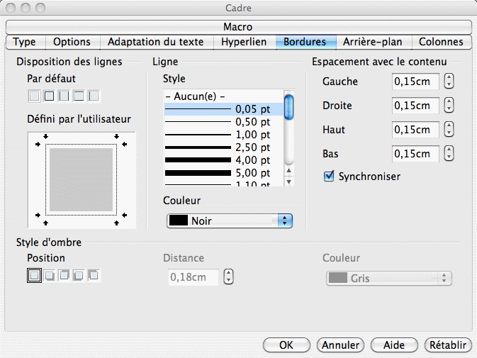
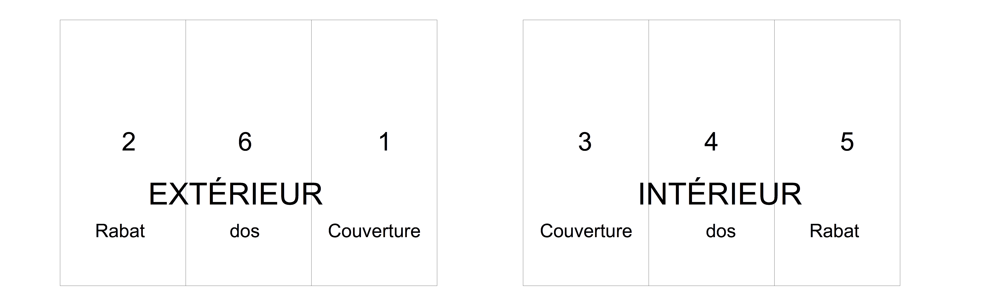

{kind=link}
{kind=link}
{kind=link}

La publication assistée par ordinateur, autrement appelée PAO désigne l'ensemble des procédés informatiques permettant de fabriquer des documents destinés à l'impression.
La Publication Assistée par Ordinateur désigne l'ensemble des procédés informatiques permettant de fabriquer des documents destinés à l'impression en vue de créer journaux, affiches, prospectus, etc.
La PAO a des contraintes différentes de la conception de sites Web. La principale est évidemment qu'alors qu'une impression l'est une bonne fois pour toutes, le site Web est visuellement dynamique.
La qualité des images est très importante en vue d'une impression papier. Elle l'est d'autant plus que l'image sera grande (affiche par exemple). Elle est fonction de la résolution de l'image. En effet, plus il y a de pixels sur une même surface, plus les détails seront visibles et le confort visuel amélioré. Sur un écran, on utilise le pixel par pouce, c'est-à-dire la densité en pixels (pixel per inch noté PPI) et sur un support d'impression (feuille, carton,...) le nombre de points par pouce c'est-à-dire la densité en points (dots per Inch, noté DPI).
Les trois photos suivantes n'ont ainsi pas la même résolution.
Un format numérique d'image est la manière dont est codée l'image en machine. Il existe plusieurs codages qui ont des caractéristiques différentes.
Le PNG est un format ouvert, c'est-à-dire dont les spécifications techniques sont publiques et sans restriction d’accès ni de mise en œuvre. Il fait, de plus, l'objet d'une recommandation du W3C (voir cours sites Web).
Le PNG est un format d'image matriciel ce qui signifie que chaque point de l'image est décrit dans une matrice (un tableau). Ainsi, dès que le zoom est suffisant, un point de la matrice est affiché sur plusieurs pixels comme on le voit sur l'image suivante.

PNG est un format matriciel, ouvert, compressé et non destructeur, c'est-à-dire que la résolution de l'image est conservée malgré une taille de fichier nettement inférieure.
Le format GIF est similaire au PNG mais plus limité en particulier au niveau des couleurs.
SVG est un format de description d'image. Qu'est-ce que cela signifie ?
Comment est-ce possible ?
Le fichier décrit comment est construit le dessin. Il est lisible de manière claire (mais pas simple).
SVG est un format de description d'image pour lequel la manière dont est construit le dessin est décrite. C'est-à-dire que contrairement au PNG qui est matriciel et donc où chaque point est décrit dans la matrice, pour SVG, le fichier décrit la position des objets graphiques les éventuels liens qui les relient. À chaque zoom, l'image est regénérée d'où sa qualité parfaite quelle que soit sa taille.
JPEG est un format d'image matriciel. Il a été conçu par le Joint Photographic Experts Group et est principalement utilisé pour les photos.
On va chercher à ne plus voir que l'image sur la page afin de pouvoir l'exporter en jpeg.
JPEG est un format numérique d'image matriciel et compressé avec perte c'est-à-dire que plus le taux de compression est fort, moins la qualité est bonne puisque plus les informations sur l'image sont perdues. Il est principalement utilisé pour les photos.

Nous l'avons déjà vu, la gestion d'un document long (typiquement un mémoire), gérée par un traitement de texte consiste à mettre en forme le contenu. En PAO, on va plutôt s'intéresser à l'organisation des différents contenus sur la page en manipulant des zones (textuelles, images, tableaux, formes,...).
On définit ces zones, leur placement, leur taille. On utilise des zones de texte, de la taille que l'on veut, et qu'on peut placer librement dans le document. On peut "lier" plusieurs zones de texte de taille différentes.
De nombreux logiciels permettent d'effectuer de la PAO. Certains sont dédiés à cette tâche et sont utilisés par les professionnels comme Adobe InDesign, QuarkXpress, Scribus, Microsoft Publisher tandis que d'autres sont les logiciels de traitement de texte qui ont quelques fonctionnalités permettant de faire un peu de PAO comme Microsoft Word, http://www.apple.com/fr/iwork/pages/ et bien sûr LibreOffice Writer.
Ces derniers permettent d'effectuer toutes les opérations de base de la PAO, et sont suffisants dans le cadre d'un travail amateur, voire semi-professionnel et bien entendu pour apprendre.
Dans le cadre de la mise en page d'un document, il faut définir les zones où apparaît le contenu. On va définir des zones pour le texte, des zones pour les images, zones que l'on pourra ensuite déplacer, réordonner, etc.
Pour créer des zones de texte dans Libre Office Writer, il faut utiliser des cadres de texte (Menu Insertion > Cadre). Les 3 propriétés essentielles d'un cadre sont :


Le principal intérêt des cadres de texte, ce qui en fait des objets vraiment utilisables par la PAO, c'est la possibilité de lier le contenu. Vous pouvez enchaîner plusieurs zones de texte entre elles, de manière à ce que le texte commencé dans la première continue dans la seconde, puis la troisième, etc.
L'insertion d'une image se fait comme d'habitude.
Nous allons réaliser une plaquette avec Libo Writer. Elle aura 3 volets rabattus l'un sur l'autre. En pratique, il s'agit d'une feuille (A4) pliée en 3, comme sur l'illustration. Une feuille A4 a comme dimension, 29,7 cm dans le sens le plus long et 21 cm dans le sens le plus court. Ces 3 volets ont tous les deux faces, ce qui fait au total 6 zones (chacune mesurant 21 cm x 9,9 cm) :

Ces trois zones sont visibles en même temps lorsque la plaquette est dépliée, vous pouvez y répartir du contenu sur plusieurs zones. Vous pouvez ainsi avoir une zone de texte ou une image à cheval sur 2 ou 3 zones.
Vous devez concevoir une plaquette sur la ville de Grenoble. Le texte sera inspiré de la page Wikipedia sur la ville. Vous devrez l'illustrer de photos et de graphiques trouvés sur le Web conçus et/ou modifiés par vous.
1Partie inspirée du cours de Vincent Archer (Techniques de commercialisation – Nice - 2008/2010)
{kind=link}